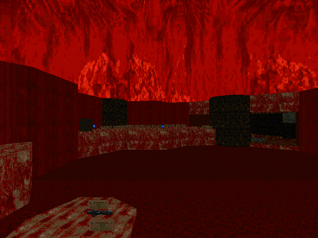

DOWNLOAD LINKS


| Year | 2024 |
| IWAD | Doom II |
| Source port | MBF21-compatible |
| Game mode(s) | Single-player |
| Map(s) contributed | MAP13 |
2 Hours to Kill! is a 14-map almost-megawad of MBF21 speedmaps made, as the project's title implies,
within a 2-hour time limit. The project was hosted by NecrumWarrior in early 2024, and uhh... I mean
it's pretty much like any other speedmapping community project. I don't know why I'm even trying to say
anything more about it.
Anyway, my submission to the project, "Gladiator", occupies the MAP13 slot. Flesh and blood dominate this
compact hellscape where rockets fly at your discretion into the faces of low-to-mid-tier demons. It isn't
anything special, but I had fun making the map.